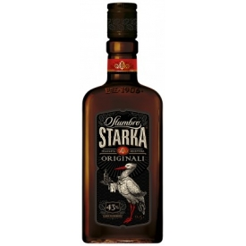
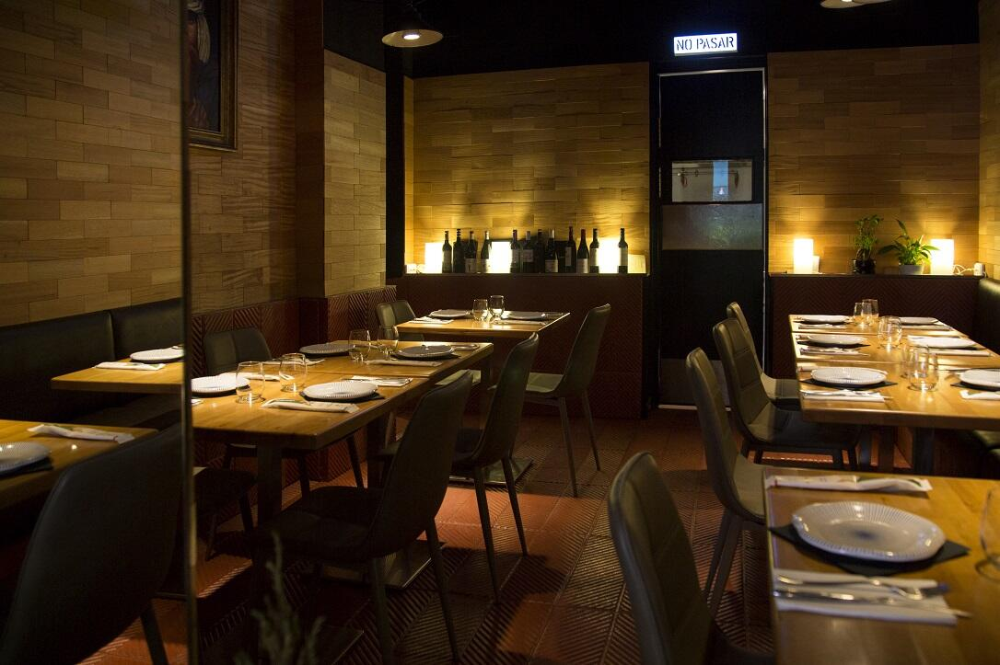
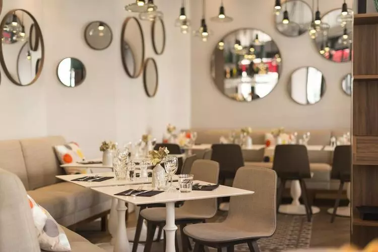

Food
Pierogi
Pierogi are filled dumplings made by wrapping unleavened dough around a savory or sweet filling and cooking in boiling water.
Pierogi or their varieties are associated with the cuisines of Central, Eastern and Southeastern Europe. Dumplings most likely originated in Asia and came to Europe via trade in the Middle Ages.
The widely-used English name pierogi was derived from Polish. In some parts of Eastern Europe they are known as varenyky. Pierogi are also popular in modern-day American and Canadian cuisine, where they are sometimes known under different local names.
Typical fillings include potato, cheese, quark, sauerkraut, ground meat, edible mushrooms, and/or fruits. Savory pierogi are often served with a topping of sour cream, fried onions, or both.
Oscypek
Oscypek (pronounced Osch-öpeck, Polish plural: oscypki), rarely Oszczypek, is a smoked cheese made of salted sheep milk exclusively in the Tatra Mountains region of Poland. Oscypek is made by an expert named "baca", a term also denoting a shepherd in the mountains. The cheese is a traditional holiday cheese in some European countries and is often pan fried and served with cranberry jam (żurawina) on the side.
Bigos
Bigos, often translated into English as hunter's stew, is a Polish dish of chopped meat of various kinds stewed with sauerkraut and shredded fresh cabbage. It is served hot and can be enriched with vegetables, spices or wine. Originally from Poland, the dish also became traditional in the areas of the vast Polish–Lithuanian Commonwealth.
Drinks
ORANZADA
This fizzy and sweet concoction is an alcohol-free Polish soft drink with a distinct orange flavour. Originally from France, Oranzada became popular in Poland during the 18th century among Polish nobility and aristocracy. Sold in grocery stores across Poland during the Soviet occupation, Oranzada has since lost some of its popularity with the recent influx of foreign soft drinks such as Coca-Cola and Pepsi. Despite this, Oranzada remains one of Poland’s favourite soft drink brands and part of modern Polish culture.

STARKA
Starka is a traditional Polish alcohol made from rye spirit, apple leaves and linden. It can be traced back to Polish nobility, who consumed the drink as part of family traditions during the 1400s. High-quality Starka is made by ageing the fermented rye mash in oak barrels anywhere from three to 50 years. Many Starka brands on the market today contain rye extract and various other ingredients, which help Starka brands stand out from one another. After WWII, the communist government of the Polish People’s Republic nationalised the Polish alcohol market and Starka was only allowed to be produced by Polmos, the Polish state-owned spirit company. Since the country regained its independence in 1990, various manufacturers of this popular liquor can be found all throughout Poland.
GRZANIEC
Grzaniec is a mulled wine made from warm red or white wine, spices such as cloves and cinnamon, sliced oranges, sugar or honey. Best enjoyed in winter to combat the cold weather, Grzaniec was first created more than 500 years ago and remains as popular as ever throughout Poland. A staple in Polish ski resorts, mountain resorts and mountainside restaurants, Grzaniec is a traditional Polish drink you must try in winter. While you can find various mulled wine varieties across Europe, Polish Grzaniec is one of the most popular versions of this drink.
Atmosphere
when strategically positioned, is an effective way to draw attention to decorative features or specific areas such as the bar, the dessert table, or artwork. It creates contrast and dramatic effect and is used to separate restaurant space into different areas: for example candles or table lamps can create an intimate, more private setting around each table, while overhead lights may showcase an open kitchen and set the stage for the chef to demonstrate his or her magic.

Studies show that people everywhere are concerned about climate change and the environment. And many people are looking for ways to improve their environmental footprint by choosing more sustainable dining options. Taking a more sustainable approach to designing and running your restaurant can create an atmosphere in which your customers feel more hopeful and better about themselves. Of course, a green vibe has to be founded on real actions or else customers will cry greenwashing. There are many ways a restaurant can reduce its environmental footprint such as using sustainable building materials and decoration, working with local suppliers and farmers, offering more plant-based options, reducing water use and implementing energy-saving lighting and appliances, among others. Why bother? Because today every industry has a responsibility to limit their environmental impact. The added benefit is that customers will feel good about giving you their business and employees are likely to feel more engaged, all of which contribute to a positive atmosphere.

either natural or from electrical overhead fixtures, is the foundation that creates an overall mood while enabling customers and staff to safely and comfortably occupy your restaurant space. Soft-lit, low ambient lighting tends to create a more intimate, cozy dining experience and is thought to encourage customers to linger longer. On the other hand bright ambient lighting creates a more lively, energetic vibe and may inspire diners to finish their meal sooner.